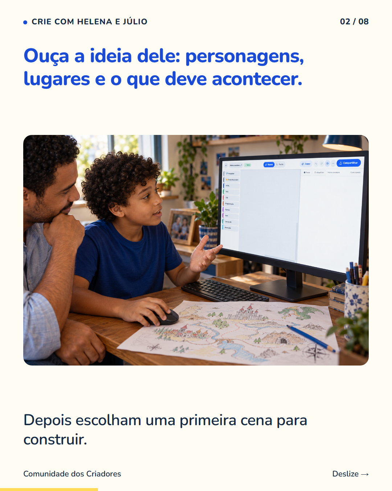
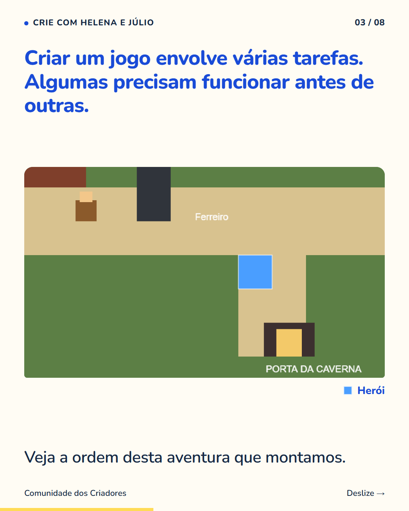
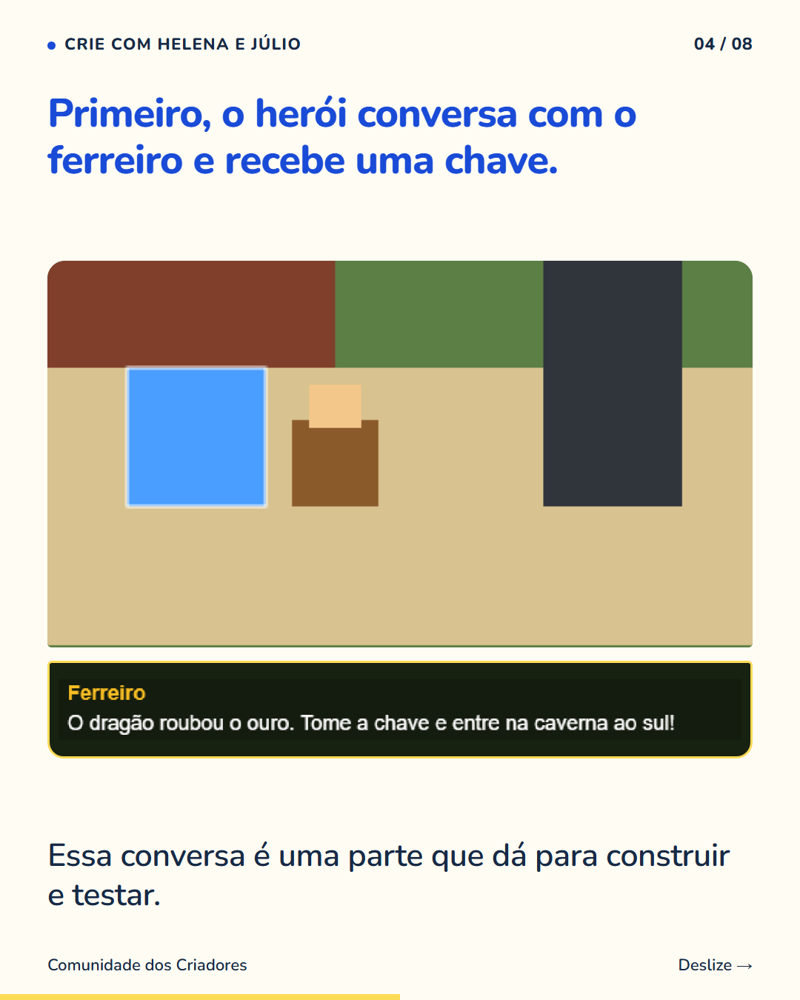
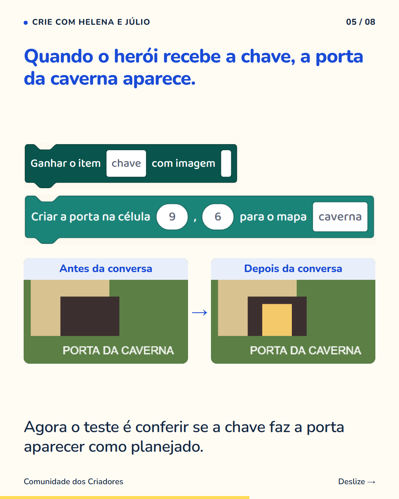
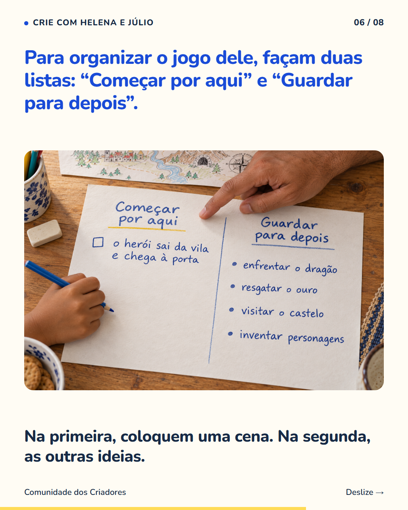
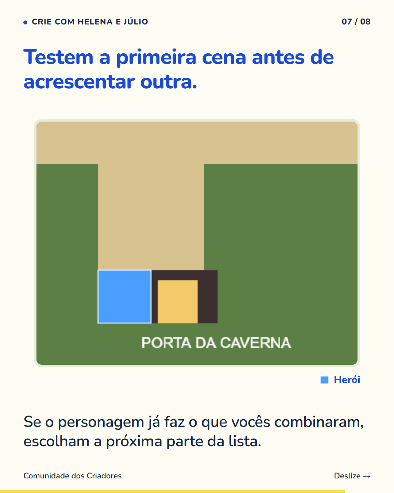
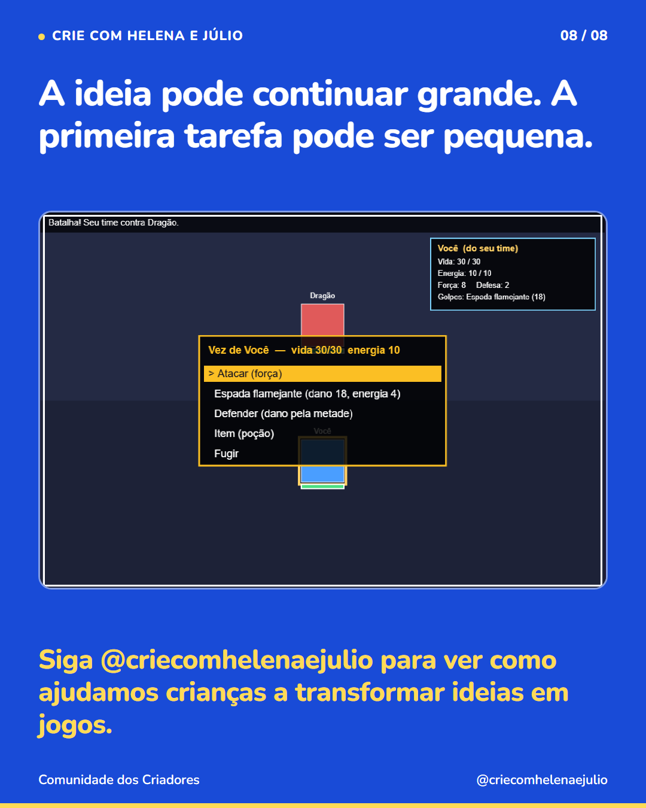

8 slides · 1080 × 1350 · Copy revisada · Da ideia no papel à primeira cena funcionando







Uma ideia cheia de personagens e fases precisa de um começo que a criança consiga construir. Peça para seu filho contar o jogo que imaginou. Depois escolham o que acontece na primeira cena: quem aparece, o que faz e como essa parte termina. As outras ideias ficam anotadas para depois. Num exemplo que montamos, o herói recebe uma chave e só então a porta da caverna aparece. São duas ações que podemos construir e conferir separadamente. Ao criar um jogo assim, a criança pratica escolher uma ordem e acompanhar o que já funciona. Quando surge uma ideia nova, ela pode guardá-la para uma próxima etapa, em vez de precisar refazer tudo naquele momento. Siga @criecomhelenaejulio para ver como ajudamos crianças a transformar ideias em jogos.